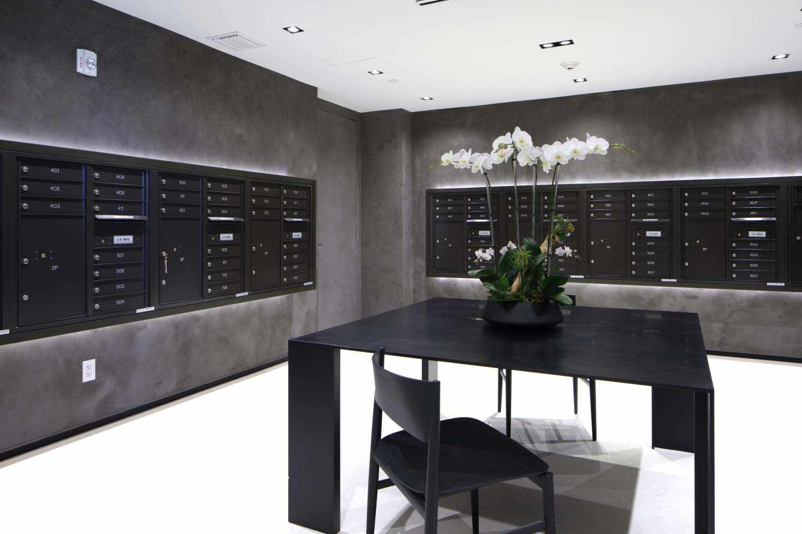
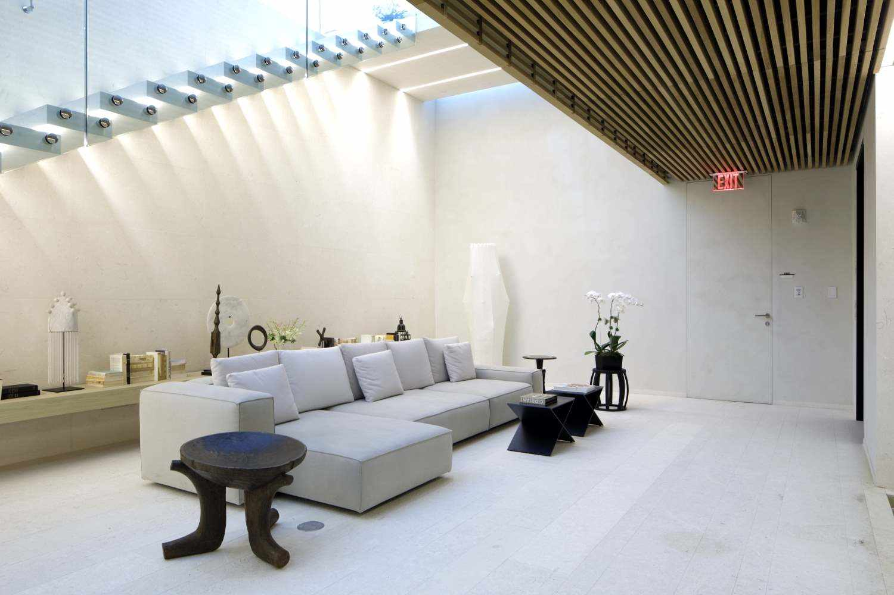

Topciment presenta Efectto!
Topciment presenta Efectto , la nuova linea di vernici decorative continue e pronte all'uso.

Efectto è una gamma molto ampia di prodotti con un'ampia varietà di finiture che sono sarà svelato nei prossimi mesi. Il primo di questi nuovi prodotti a vedere la luce è Efectto Quartz.
Efectto Quartz deve il suo nome alla finitura minerale e naturale che lo caratterizza. A Una volta applicato, questo prodotto permette di ottenere finiture decorative molto piacevoli. sia in vista che al tatto. La sua finitura è simile a quella del microcemento, ma con un molto più naturale e senza filigrane.
Inoltre, uno dei grandi vantaggi di Efectto Quartz è che è pronto all'uso. la loro preparazione è meno laboriosa e più pratica. Hai solo bisogno aprire il secchio e iniziare a lavorare.
Efectto Quartz e tutti i prodotti della famiglia Efectto sono il risultato di un'ardua ricerca di nuovi materiali e tecniche di produzione, con l'obiettivo di per offrire ai nostri clienti un prodotto di altissima qualità.
Topciment, nella sua voglia di innovare, offre al professionista un prodotto unico, a margine del mercato. e che rompe con le convenzioni decorative.
Topciment cambia immagine!
Da Topciment abbiamo deciso di fare un altro passo in avanti per quanto riguarda il design e abbiamo aggiornato
la nostra immagine e il disegno dei nostri contenitori. Presentiamo la nostra gamma di prodotti Sttandard ,
stesse qualità e prestazioni, ma con un'immagine rinnovata molto più accattivante ed attuale, sempre
senza perdere l'essenza di Topciment.

Con questo miglioramento vogliamo fare un passo avanti per quanto riguarda il design e avere una immagine che rappresenti davvero il nostro marchio. Materiale TOP, design TOP.
Inoltre, abbiamo associato un colore specifico ad ognuno dei nostri prodotti per rendere molto più semplice identificarli e facilitare così il lavoro di tutte le persone che lavorano con i nostri prodotti.
Il distintivo TT di Topciment acquisisce importanza in questo nuovo design ed è stato l'asse centrale di questo rinnovamento della denominazione di immagini e prodotti. Quindi la linea di microcemento bicomponente cambia nome. È un passaggio rischioso, ma passiamo da un nome molto generico come bicomponente , a un Topciment su misura: standard, sempre con il nostro TT che rafforza il marchio.
Pertanto, d'ora in poi i nostri microcementi bicomponenti verranno rinominati in:
- Sttandard Microbase 20KG
- Sttandard Microfino 20KG
- Sttandard Microstone 20KG
- Sttandard Microdeck 20KG
- Sttandard Aquaciment 20KG
Tuttavia, questo cambiamento non è solo a livello estetico, ma è stata implementata anche la qualità e l'ergonomia dei cubi, perché non siamo solo focalizzati sull'immagine ma anche sul raggiungimento della migliore qualità in tutto ciò che circonda Topciment.
Con tutti questi miglioramenti, Topciment vuole rafforzare la sua immagine e posizionarsi come il miglior marchio di microcemento in termini di qualità dei materiali e anche nel design. Sempre senza dimenticarci delle persone che lavorano con noi, perché tutto questo miglioramento è per loro.
Rivestimenti murali con Topciment
Molte volte quando pensiamo nel rivestimento delle pareti in alcune stanze, o l'intera casa, ci chiediamo quale sia la soluzione migliore per eseguire questi importanti cambiamenti e qual è la tecnica che ci evitera' disagi e ci farà risparmiare più e denaro . Inoltre, cerchiamo un materiale che ci dia una qualità e un risultato estetico e duraturo.

Il microcemento, per la sua resistenza e facilità di manutenzione, è ideale per qualsiasi tipo di rivestimento, tuttavia, dove il microcemento brilla di luce propria è sulle pareti specialmente quelle che richiedono igiene e pulizia costante, come le pareti della cucina o del bagno.
Questo materiale rende inutili complicati lavori e la produzione di detriti, quindi è ideale per tutti i tipi di soggiorni.
Topciment ha sviluppato un prodotto imbattibile per rivestimenti murali: il Microfino.
Il Microfino è un microcemento per finiture decorative con texture a grana fine, molto piacevole e setosa al tatto, che produce un caratteristico effetto Nuvolato. Queste proprietà rendono il Microfino il prodotto ideale per il rivestimento delle pareti e un prodotto molto richiesto da architetti e dagli interior designer di tutto il mondo.

Un'altra opzione di alta qualità che Topciment offre ai suoi clienti è Microdeck. Il Microdeck è un microcemento con textura media, utilizzato principalmente per pavimenti, tuttavia, quando applicato alle pareti con la tecnica "bagnato su bagnato" si ottiene una finitura liscia quasi come quella che ci da il Microfino, ma più naturale . Visto che le nuvolature si apprezzano meno.

Entrambi i prodotti, combinati con la gamma di colori, texture e vernici di Topciment, fanno si che il rivestimento delle stanze acquisisca una dimensione estetica superiore a tutto ciò a cui siamo abituati
Topciment consiglia Festool per un' applicazione perfetta
Una buona applicazione di Microcemento è condizionata da diversi fattori, tra i quali è essenziale contare con dei prodotti di qualità, che devono essere in mano a un professionista che domina le varie tecniche di applicazione, ma anche che utilizzi gli strumenti migliori per creare delle finiture straordinarie. Con la combinazione dei prodotti Topciment e le macchine di Festool si ottengono applicazioni di successo garantite
Il metodo di applicazione Topciment richiede diversi strumenti per ciascuno dei passaggi. A seconda dei processi di applicazione, si consiglia le seguenti macchine Festool:
Miscelatori e Agitatori MX: macchine eccellenti per ottenere una miscela uniforme e facile da lavorare. Il sistema Ergofix permette di regolare l'altezza della frusta per non soffrire lesioni alla schiena. Inoltre, i bordi di gomma sono progettati per sopportare eventuali urti e colpi pesanti. In queste macchine possiamo incorporare le fruste senza l'utilizzo di attrezzi. Specificamente, le fruste elicoidali HS si adattano perfettamente alle macchine che sono in grado di muovere fino a 60 kg di materiale. Sono ideali per le miscele pesanti e viscose, come il Microcemento, gli autolivellanti o le resine epossidiche.

Levigatrici orbitali ROTEX: Questo modello di macchine è il migliore per levigare il microcemento e rimuovere imperfezioni e rilievi. È uno strumento fondamentale nella finitura del processo di applicazione. Distacca la sua impugnatura ergonomica, la facilità per cambiare i dischi e la possibilità di realizzare tre tipi di movimenti per ottenere effetti con la levigatura: grossa, fine o levigata. Si consiglia di montare sulla levigatrice il disco abrasivo ROTEX , con la durezza necessaria per i micromortai di Topciment. Con l'obiettivo di una levigatura ad alte prestazioni, con la massima qualità possibile e pensando alla salute di chi lo utilizza. Festool ha brevettato il sistema MULTI-JETSTREAM, che consente la rigenerazione costante dell'aria, il raffreddamento della macchina e la riduzione delle ostruzioni.

Sistemi mobili cleantec:moderni aspiratori con i cuali si possono conseguire una pulizia perfetta ad una velocita' record. E' il modo migliore per evitare le nuvole di sporco durante i lavori. Allo stesso tempo, si impedisce l'inalazione continua di polveri che possono causare effetti nocivi sulla salute delle persone che fanno quotidianamente uso di levigatrici. Diversamente, il suo design è pensato per un comodo trasporto, visto che dispone di una struttura robusta, grandi ruote e l'asse in acciaio per non danneggiarlo durante gli spostamenti ed evitare ribaltamenti.
I risultati dell'utiliizzo di questi strumenti insieme ai prodotti Topciment per l'applicazione di Microcemento creano risultati della massima qualità possibile, puliti e salutari.
Maggiori informazioni:https://www.festool.it/

Errori da evitare nella combinazione dei colori
Errori da evitare nella combinazione dei colori
L'uso di colori audaci nella colorazione è oggi di tendenza, besò bisogna fare attenzione e non commettere errori. Nel disegno di interiori la combinazione di alcuni toni può risultare un vero disastro. Mischiare colori può essere un gioco pericoloso ma accessibile a tutti; spesso si pensa che sia un' arte riservata unicamente a pochi professionisti della decorazione. .In Topciment vi proponiamo alguni trucchi per riuscire a ridefinire con successo i diversi spazi della casa..

Errore 1 - associare più di tre colori
Nel design di interi questa è una delle principali regole: con l'unione di più toni diversi nella stessa stanza non si ottiene armonia.. Mescolare quattro o più colori può creare confusione.. Una buona idea può essere scegliere diversi toni di un colore, per esempio: dal rosa chiaro al fucsia, aggiungendo un color lampone. l'uso di diverse tonalità cromatiche aiuta a non commettere errori.

Errore 2 - Esagerare con i contrasti
I toni forti generano attrazione a prima vista, ma esagerare con questi può rendere l'ambiente pesante giorno dopo giorno. Le combinazioni attrattive che funzionano in ristoranti e hotel, in una cucina possono stancare l'occhio e produrre un rifiuto visivo. Una buona alternativa è provare su una parete, e se l'effetto non risulta essere quello desiderato, si possono riorganizzare o cambiare gli elementi decorativi fino a raggiungere un buon risultato.
Errore 3 - Non separare gli spazi
In una casa esistono diverse stanze dove una miscela esplosiva di colori può risultare fastidios. Le camere da letto, le cucine e i saloni sono le zone incui si passa la maggior parte del tempo, e i colori inusuali tendono a stancare. Le aree di transito come i corridoi e la sala d'entrata permettono invece di poter sfidare la propria immaginazione con diverse miscele e opportunità.
Errore 4 - Pensare solo alle pareti
Bisogna ricordare che, nella decorazione, non partecipano solo pavimenti e pareti, ma anche i battiscopa, le porte, i mobili e i soffitti. Creando una decorazione su una parete o giocando con i contrasti sulle cornici delle porte si possono raggiungere composizioni sorprendenti. Allo stesso modo sono rilevanti nel risultato finale anche i divani, i cuscini e i tappeti che con diversi toni del colore scelto aggiungerano valore alla stanza. Tutto è questione di variare le proporzioni, i dosaggi, e azzardarsi.
Errore 5 - Scurire la decorazione originale

Microcemento in cucina
I migliori piatti si preparano in un ambiente che serva da fonte d'ispirazione.
Ogni cuoco ha bisogno di elementi che accompagnano la sua creativitá, e il microcemento è versatile tanto quanto le persone: esiste una finitura per ogni stile. Che sia per fare una cucina nuova o per ristrutturarne una antica, si possono raggiungere effetti di finitura completamente unici. In caso di una ristrutturazione, si aderisce alla superficie esistente con uno spessore massimo di 3 millimetri, ciò che permette una posa in pareti e pavimenti più veloce e senza bisogno di cantieri, rumori o rifiuti.
Il microcemento è un materiale neutro che si adatta a qualsiasi tipo di cucina, che sia classica o contemporanea, con uno stile industriale o nordico. I toni chiari regalano luminosità e ampiezza, mentre i toni scuri creano ambienti più accoglienti. In cucine aperte, il microcemento offre la possibilità di mantenere la continuità del pavimento con quello del salone, conferendo armonia all'insieme. Se invece lo scopo è di separare e creare contrasto, scegliendo colori opposti si potranno meglio differenziare le stanze. Dopo aver scelto la finitura del microcemento, il passo successivo sarà scegliere dei mobili in accordo con i colori usati e gli effetti ottenuti. In questo caso, anche i mobili possono essere rivestiti con microcemento per raggiungere un disegno originale ed esclusivo al 100%.
La cucina deve essere pulita, visto che in essa si lavora con alimenti.
Il pavimento e le pareti sono sempre esposti a schizzi di olio e/o gocce di liquidi. Sotto questo aspetto, il microcemento ha un grande vantaggio: la sua manutenzione è molto semplice. Non avendo fughe, la pulizia è facile: con la gamma di prodotti Ecoclean di Topciment si otterranno pavimenti e pareti risplendenti. Si eviterà così l'uso di prodotti aggressivi come la candeggina o l' ammoniaca, che generano vapori sgradevoli e possono essere nocivi per la salute.
Comodità e personalizzazione si uniscono per ottenere cucine fantastiche con un elemento in comune: il rivestimento di microcemento.
Microcemento senza problemi
Come evitare problemi con il microcemento? Un'applicazione Topciment garantisce i prodotti della migliore qualità, applicatori certificati, ed esperti in microcemento.
Una ristrutturazione con microcemento realizzata da professionisti specializzati ed eseguita con prodotti di qualità evita l'apparizione di problemi durante e dopo la conclusione del lavoro.
Il primo passo è scegliere uno specialista che conosca i diversi materiali e che tra questi scelga quello di maggiore qualità.
Differenziare i tipi di microcemento e applicarli sulla superficie per il quale sono stati creati è fondamentale per garantire una ristrutturazione con esito. Un' adeguata consulenza inizia con l'analisi del supporto da rivestire e un calcolo stimato di prodotti, tempo e prezzi a seconda dei metri quadrati da ristrutturare.
Per posare il microcemento non è necessario togliere il supporto originale, è però necessario prepararlo correttamente. Se ci sono fughe nel pavimento o nella parete, bisognerà livellare l'altezza e l'assorbimento tra il materiale e la fuga. Una volta livellata la base si dovrà realizzare un' imprimazione che, oltre a garantire l'aderenza tra il materiale esistente e quello nuovo, lascierà una porosità omogenea in tutta la superficie. Inoltre si consiglia l'uso della rete in fibra di vetro per prevenire crepe nella base.
Le istruzione d'uso del microcemento devono essere rigorosamente rispettata per assicurare una ristrutturazione senza problemi. Un buon professionista miscelerè correttamente i componenti dei differenti prodotti per assicurarsi di raggiungere le massime prestazioni degli stessi (durezza, impermeabilità, ecc..). Inoltre, il rispetto dei tempi di asciugatura è indispensabile per evitare l'apparizione di macchie d'umidità. Un cantiere dove si seguono alla perfezione le fasi di applicazione non genera difficoltà.
Un'applicazione con Topciment garantisce prodotti della miglior qualità, applicatori certificati ed esperti di microcemento, consulenza tecnica durante la realizzazione della ristrutturazione e una squadra efficiente risolvendo ogni dubio. Contattaci per ulteriori informazioni.

Nuovi prodotti per la pulizia e la manutenzione del microcemento
Topciment inserisce nel mercato quattro nuovi prodotti specialmente formulati per la cura, la manutenzione e la pulizia del microcemento. I detergenti Ecoclean ed Ecoclean Pro sono ecologici e indicati sia per un uso domestico che professionale.
Le cere Ceraciment e Ceraciment Pro utilizzate per la manutenzione dei pavimenti ne garantiscono la durezza e la lucentezza naturale per molto piú tempo. Le loro formule speciali ne permettono la nutrizione e l’assorbimento nelle superfici trattate, ed é specialmente indicato per pavimenti di microcemento.
Nella sezione per Professonisti >> Schede Tecniche troverá i dettagli tecnici di questa nuova gamma di prodotti per la cura e la pulizia di Topciment.
Topciment rinnova per un altro anno l’accordo con CYPE
Anche quest’anno Topciment ha rinnovato con CYPE. Con questo accordo, l’azienda produttrice di microcemento potrà continuare a fornire assistenza ai professionisti dell’edilizia in fase di elaborazione di preventivi.
La società con sede a Manises si afferma come una delle imprese più impegnate nei confronti di architetti e ingegneri. L’accordo, infatti, consentirà a questi professionisti di avvalersi di una descrizione precisa ed esaustiva delle caratteristiche di ogni unità di prodotto, in questo caso il microcemento, mediante il Generatore di prezzi.
Il Generatore di prezzi, alla cui piattaforma accedono più di 2 milioni di utenti l’anno, è un efficace strumento informatico utilizzato da architetti e responsabili di progetto che fornisce prezzi con stime dei costi agevolando l’elaborazione di una documentazione di progetto completa e di qualità. Allo stesso tempo, lo strumento include informazioni dirette sui fabbricanti e i loro prodotti.
Topciment, integrando la sua offerta nel Generatore di prezzi, ha inserito i suoi prodotti nella vetrina più consultata della costruzione. I tecnici potranno così trovare velocemente le informazioni e le immagini dei prodotti Topciment che più si adattano alle esigenze di ogni loro progetto.
Il Generatore di prezzi è un’efficace guida di progettazione ancora più completa grazie alla presenza dei prodotti Topciment.